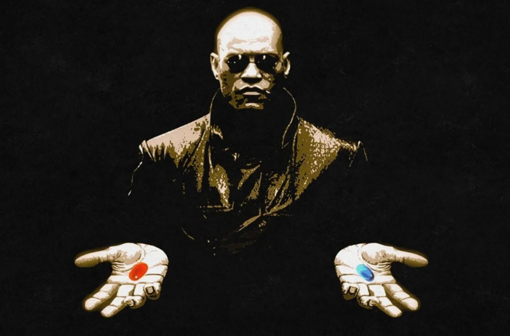

Surveillance nominal — pick a mission from the sidebar. Live stream connections spin up when you open Chat or enable the website embed.
[ GOONOPTICON DESKTOP ]
Surveillance nominal — pick a mission from the sidebar. Live stream connections spin up when you open Chat or enable the website embed.
